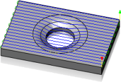

Activé
Désactivé
Détermine si vous souhaitez ou non que des trajectoires d'outil soient calculées aux endroits où l'outil n'est pas en contact avec la surface d'usinage. Lorsque cette option est désactivée, les trajectoires d'outil sont prolongées jusqu'à la limite de confinement et traversent les ouvertures dans la pièce de travail.
|
 |
Activé |
Désactivé |